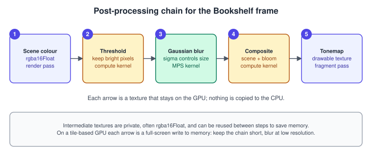
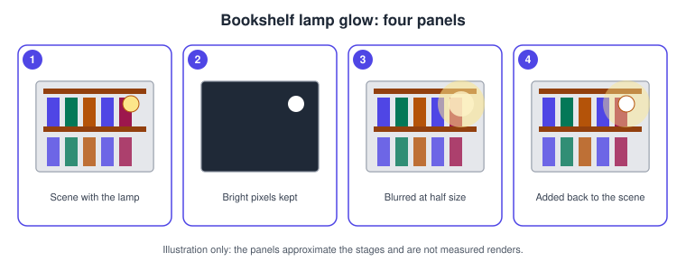
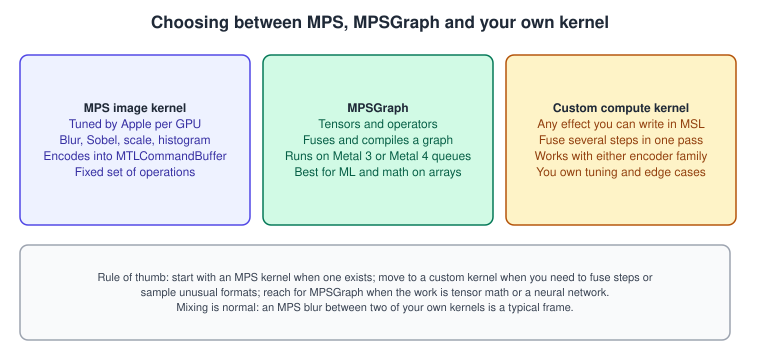

Image Processing, Metal Performance Shaders and MPSGraph
|
This content was generated with the assistance of AI and should be verified against the official documentation before being relied on in production. |
A rendered frame is rarely the final image. Bloom around a lamp, a blur behind a menu, an edge map for picking, a histogram for auto-exposure and a sharpening pass after upscaling are all image processing: a texture goes in, another texture comes out. Metal has three ways to do it, and this page explains all three and when to choose each: your own compute kernels, the Metal Performance Shaders (MPS) image filters that Apple tunes for every GPU, and MPSGraph, which expresses the work as a graph of tensor operations.
The facts were checked in November 2026. The versions documented are Metal 4 (the MTL4* types, available from iOS, iPadOS, macOS,
tvOS and visionOS 26.0) next to the older MTL* types, and Metal Shading Language 4.0 and 4.1 (MTLLanguageVersion.version4_0 from
the 26 OSes, version4_1 from the 27 OSes). Metal 4 needs an A14 or later, an Apple-silicon Mac or an Apple Vision Pro; the MPS image
kernels are much older (iOS 9, macOS 10.13) and run on every Metal GPU. The code is Swift 6 with Xcode 27, which needs an
Apple-silicon Mac, and a .metal file compiled into the default library.
In the running example, Metal Bookshelf (a multiplatform SwiftUI app hosting an MTKView, with a Metal 4 path and a Metal 3
fallback, plus a visionOS target), this page is the post-processing step that follows the lit shelf: the lamp gets a glow, and the
frame is tone mapped. The compute basics it relies on are in Compute Kernels, the
particles that share the frame are in Particles, and the general theory of full-screen
effects is in Transparency, Blending and Post-Processing. For the same
idea on other APIs see OpenGL framebuffers and render to texture.
The shape of a post-processing chain

Every step reads one or more textures and writes one. The design questions are always the same:
-
Where do the intermediate textures live? They are almost always
.private(GPU only), often.rgba16Floatso that values above 1.0 survive until tone mapping, and sometimes at half or quarter resolution (blur does not need full resolution). -
Which usage flags do they need?
.renderTargetif a render pass writes them,.shaderReadif a kernel or fragment function samples them,.shaderWriteif a compute kernel writes them. MPS kernels read their source with.shaderReadand write the destination with.shaderWrite. A missing flag is a validation error, not a silent failure. -
Which queue or encoder runs it? A custom kernel can be encoded into either an
MTL4ComputeCommandEncoderor anMTLComputeCommandEncoder. An MPS kernel encodes into anMTLCommandBuffer(this is the documented signature, see below). -
Who is waiting for whom? Each step must see the previous step’s writes. On one encoder the barrier rules of Synchronization and Barriers apply; between command buffers you use events.

Offscreen textures
The scene is rendered into a texture you own, not into the view’s drawable, so that the following steps can read it. The drawable is only written by the last step.
import Metal
struct PostTargets {
let scene: MTLTexture // full resolution, HDR colour
let bright: MTLTexture // half resolution, thresholded
let blurred: MTLTexture // half resolution, blurred
init(device: MTLDevice, width: Int, height: Int) {
func make(_ w: Int, _ h: Int, _ label: String, extra: MTLTextureUsage) -> MTLTexture {
let d = MTLTextureDescriptor.texture2DDescriptor(
pixelFormat: .rgba16Float, width: max(w, 1), height: max(h, 1), mipmapped: false)
d.storageMode = .private
d.usage = extra.union([.shaderRead, .shaderWrite])
let t = device.makeTexture(descriptor: d)!
t.label = label
return t
}
scene = make(width, height, "Scene HDR", extra: .renderTarget)
bright = make(width / 2, height / 2, "Bloom bright", extra: [])
blurred = make(width / 2, height / 2, "Bloom blurred", extra: [])
}
}Source: MTLTextureDescriptor
Recreate the targets when the drawable size changes (see MetalKit, MTKView and SwiftUI). Half-resolution targets divide the memory and the bandwidth of the blur by four.
Custom kernels: threshold and composite
Some steps have no MPS equivalent. The bright-pass and the final composite are two tiny kernels. Each thread handles one pixel;
dispatchThreads lets Metal handle the edge threadgroups when the grid is not a multiple of the threadgroup size (the details are
in Compute Kernels).
#include <metal_stdlib>
using namespace metal;
struct BloomParams {
float threshold; // luminance above which a pixel glows
float knee; // soft transition width
float intensity; // how much glow is added back
};
// Reads the full-resolution scene and writes a half-resolution bright pass.
kernel void brightPass(texture2d<float, access::sample> scene [[texture(0)]],
texture2d<float, access::write> bright [[texture(1)]],
constant BloomParams &p [[buffer(0)]],
uint2 gid [[thread_position_in_grid]])
{
if (gid.x >= bright.get_width() || gid.y >= bright.get_height()) { return; }
constexpr sampler s(coord::normalized, address::clamp_to_edge, filter::linear);
float2 uv = (float2(gid) + 0.5) / float2(bright.get_width(), bright.get_height());
float3 c = scene.sample(s, uv).rgb;
float luma = dot(c, float3(0.2126, 0.7152, 0.0722));
// Soft threshold: 0 below (threshold - knee), 1 above (threshold + knee).
float w = smoothstep(p.threshold - p.knee, p.threshold + p.knee, luma);
bright.write(float4(c * w, 1.0), gid);
}
kernel void composite(texture2d<float, access::read> scene [[texture(0)]],
texture2d<float, access::sample> blurred [[texture(1)]],
texture2d<float, access::write> output [[texture(2)]],
constant BloomParams &p [[buffer(0)]],
uint2 gid [[thread_position_in_grid]])
{
if (gid.x >= output.get_width() || gid.y >= output.get_height()) { return; }
constexpr sampler s(coord::normalized, address::clamp_to_edge, filter::linear);
float2 uv = (float2(gid) + 0.5) / float2(output.get_width(), output.get_height());
float3 base = scene.read(gid).rgb;
float3 glow = blurred.sample(s, uv).rgb;
output.write(float4(base + glow * p.intensity, 1.0), gid);
}Source: Performing calculations on a GPU
Points worth knowing:
-
access::writetextures cannot be sampled;access::sampletextures cannot be read by integer coordinate. Reading and writing the same texture in one kernel needsaccess::read_write, which not every pixel format supports (check the Feature Set Tables). -
Sampling a half-resolution target with
filter::linearis what makes the up-scale in the composite smooth. -
The soft knee avoids the flicker you get from a hard threshold when a pixel hovers around the limit from frame to frame.
MPS image kernels
Metal Performance Shaders is a framework of GPU kernels that Apple optimises for each GPU generation. The image-processing part is
built around one base class: MPSUnaryImageKernel, a kernel that consumes one texture and produces one texture. Its subclasses are
what you actually create.
| Kernel | What it does | Main parameter |
|---|---|---|
|
Convolves with a Gaussian in x and y |
|
|
Box or tent blur |
|
|
Edge strength by the Sobel operator |
|
|
Second-derivative edge detector |
|
|
Median filter, good against salt-and-pepper noise |
|
|
Pixel becomes 1 or 0 around a threshold |
|
|
Morphological dilation |
|
|
Your own convolution matrix |
|
|
Resample to another size |
|
|
Builds a chain of blurred, half-size levels |
levels derived from the source size |
|
Counts pixel values into a buffer |
|
The complete list is on the framework page linked from the references. Three shared concepts matter for every filter.
Creating and encoding
import Metal
import MetalPerformanceShaders
let blur = MPSImageGaussianBlur(device: device, sigma: 6.0)
blur.edgeMode = .clamp // what to read outside the texture
blur.label = "Bloom blur"
// Encode into a classic command buffer: source and destination are textures.
blur.encode(commandBuffer: commandBuffer,
sourceTexture: targets.bright,
destinationTexture: targets.blurred)Source: MPSImageGaussianBlur
The kernel object is cheap to keep: create it once, not per frame. MPSKernel.options takes MPSKernelOptions such as skipAPIValidation, allowReducedPrecision, disableInternalTiling and
insertDebugGroups, and label shows up in captures.
Region of interest: offset and clipRect
offset (an MPSOffset) shifts where the source is read relative to the destination, which is how you align a half-size source
with a full-size destination. clipRect (an MTLRegion) limits which destination pixels are written, which is how you blur only
a rectangle, for example the area behind a translucent menu. sourceRegion(destinationSize:) tells you how much of the source a
given destination size needs, useful when you tile a large image.
Edge modes
MPSImageEdgeMode controls what a filter reads beyond the texture border: zero, clamp, constant, mirror and mirrorWithEdge. Screen-space effects almost always want
clamp or a mirror mode; zero leaves dark borders that look like a vignette bug.
In-place encoding
encode(commandBuffer:inPlaceTexture:fallbackCopyAllocator:) filters a texture without a second one. It returns false if the kernel
cannot work in place and the allocator could not provide a copy, so provide an allocator that makes a texture with the same
descriptor. Not all kernels can run in place, and the fallback copy costs the memory you hoped to save.
MPS in a Metal 4 frame
The documented MPS kernel methods take an MTLCommandBuffer, the classic type. A Metal 4 frame is encoded into MTL4CommandBuffer
objects committed to an MTL4CommandQueue. The two coexist: Apple documents that you can synchronise work between an
MTL4CommandQueue and an MTLCommandQueue with an MTLEvent, and that events work with any combination of both queue types.
The pattern for a blur in the middle of a Metal 4 frame is therefore three submissions on one timeline:
-
The Metal 4 queue renders the scene and the bright pass, then signals an event with value N.
-
The classic queue waits for N, encodes the MPS blur, and signals N plus 1.
-
The Metal 4 queue waits for N plus 1, then runs the composite and the tone map.
import Metal
import MetalPerformanceShaders
final class BloomChain {
let device: MTLDevice
let queue4: MTL4CommandQueue // Metal 4 work
let queue3: MTLCommandQueue // MPS work
let event: MTLEvent
var counter: UInt64 = 0
let blur: MPSImageGaussianBlur
init(device: MTLDevice) {
self.device = device
queue4 = device.makeMTL4CommandQueue()!
queue3 = device.makeCommandQueue()!
event = device.makeEvent()!
blur = MPSImageGaussianBlur(device: device, sigma: 6.0)
}
/// Called between the Metal 4 submissions of one frame.
func submitBlur(source: MTLTexture, destination: MTLTexture) {
let waitValue = counter + 1
let doneValue = counter + 2
counter += 2
// 1. The Metal 4 queue signals when the bright pass is done.
queue4.signalEvent(event, value: waitValue)
// 2. The classic queue waits, blurs, signals.
let cb = queue3.makeCommandBuffer()!
cb.label = "MPS bloom blur"
cb.encodeWaitForEvent(event, value: waitValue)
blur.encode(commandBuffer: cb, sourceTexture: source, destinationTexture: destination)
cb.encodeSignalEvent(event, value: doneValue)
cb.commit()
// 3. The Metal 4 queue waits before the next Metal 4 command buffer runs.
queue4.waitForEvent(event, value: doneValue)
}
}Two details trip people up. The MTL4CommandQueue.signalEvent and waitForEvent calls apply to commands committed to that queue in
order, so call signalEvent after you committed the command buffers that precede it and waitForEvent before you commit the ones that
follow. And a texture touched by an MPS kernel and by a Metal 4 encoder must be resident for the Metal 4 side: add it to a
residency set (see Argument Buffers and Bindless Resources). On a Metal 3
fallback path the whole chain is one MTLCommandBuffer and no events are needed.
If the extra queue and events feel heavy for a single blur, a custom separable Gaussian in your own kernels keeps everything on the Metal 4 queue; the trade-off is that you then own the tuning for each GPU family.

Running the chain with Metal 4 encoders
The two custom kernels are encoded with an argument table. In Metal 4 a compute encoder has no setTexture call; textures are written
into an MTL4ArgumentTable using their gpuResourceID, and the table is bound to the encoder. The full explanation is in
Argument Buffers and Bindless Resources.
struct BloomParams { var threshold: Float; var knee: Float; var intensity: Float }
func encodeBrightPass(commandBuffer: MTL4CommandBuffer,
table: MTL4ArgumentTable,
pipeline: MTLComputePipelineState,
scene: MTLTexture, bright: MTLTexture,
params: MTLBuffer) {
guard let enc = commandBuffer.makeComputeCommandEncoder() else { return }
enc.label = "Bright pass"
enc.setComputePipelineState(pipeline)
table.setTexture(scene.gpuResourceID, index: 0) // [[texture(0)]]
table.setTexture(bright.gpuResourceID, index: 1) // [[texture(1)]]
table.setAddress(params.gpuAddress, index: 0) // [[buffer(0)]]
enc.setArgumentTable(table)
let w = pipeline.threadExecutionWidth
let h = max(pipeline.maxTotalThreadsPerThreadgroup / w, 1)
enc.dispatchThreads(threadsPerGrid: MTLSize(width: bright.width, height: bright.height, depth: 1),
threadsPerThreadgroup: MTLSize(width: w, height: h, depth: 1))
enc.endEncoding()
}Source: MTL4ComputeCommandEncoder
An MTL4ArgumentTable is a plain mutable object, not a frame snapshot. If you change a binding after encoding a dispatch, that
dispatch is unaffected, but you must not overwrite a table that the GPU may still read from a previous frame’s command buffer; keep
one table per frame in flight or rebuild it per pass.
MPS histogram and machine-vision filters
The MPS image set also covers analysis. MPSImageHistogram counts pixels per channel into a buffer whose size you query with
histogramSize(forSourceFormat:); the result feeds an auto-exposure kernel. MPSImageSobel and MPSImageLaplacian produce edge
maps used by outline effects and by classical vision pipelines. MPSImageGaussianPyramid creates the levels used by blur-based
effects at several scales. For learned vision models, the older MPS neural-network classes (MPSCNN family and MPSNNGraph) are
superseded by MPSGraph, Core ML and the Metal 4 machine-learning encoder, covered in
Machine Learning in Metal 4.
import Metal
import MetalPerformanceShaders
func makeHistogram(device: MTLDevice, source: MTLTexture) -> (MPSImageHistogram, MTLBuffer) {
var info = MPSImageHistogramInfo(
numberOfHistogramEntries: 256,
histogramForAlpha: false,
minPixelValue: vector_float4(0, 0, 0, 0),
maxPixelValue: vector_float4(1, 1, 1, 1))
let histogram = MPSImageHistogram(device: device, histogramInfo: &info)
let size = histogram.histogramSize(forSourceFormat: source.pixelFormat)
let buffer = device.makeBuffer(length: size, options: .storageModeShared)!
return (histogram, buffer)
}
// Per frame, on the classic command buffer:
// histogram.encode(to: commandBuffer, sourceTexture: lumaTexture, histogram: buffer, histogramOffset: 0)Source: MPSImageHistogram
MPSGraph
MPSGraph builds a graph of operations on tensors, compiles it, and runs it on the GPU. It is the right tool when the work is arithmetic on arrays rather than a fixed image filter: normalising a batch of images, running a small neural network, a reduction over a whole frame.
The workflow has four parts:
-
Create an
MPSGraphand describe the computation with placeholders (inputs), constants and operations. Each call returns anMPSGraphTensor. -
Wrap the real data in
MPSGraphTensorData. It can be built from anMTLBufferwith a shape and anMPSDataType, from anMPSImageBatch, anMPSNDArray, or anMTLTensor(the Metal 4 tensor type). -
Run it:
run(with:feeds:targetTensors:targetOperations:)blocks until done and returns the results;runAsyncvariants return immediately, and there arerunAsync(on:...)overloads that take anMTL4CommandQueue. For repeated use, callcompile(with:feeds:targetTensors:targetOperations:compilationDescriptor:)once to get anMPSGraphExecutable. -
Read the result from the output
MPSGraphTensorDataor from a buffer you passed inresultsDictionary.
The example adjusts exposure and clamps an array of RGBA floats, for instance an 8x8 tile of the frame read back for a thumbnail:
import MetalPerformanceShadersGraph
func exposureAdjust(device: MTLDevice, queue: MTLCommandQueue,
input: MTLBuffer, output: MTLBuffer, count: Int, stops: Double) {
let graph = MPSGraph()
let shape: [NSNumber] = [NSNumber(value: count), 4]
let x = graph.placeholder(shape: shape, dataType: .float32, name: "pixels")
let gain = graph.constant(pow(2.0, stops), dataType: .float32)
let zero = graph.constant(0.0, dataType: .float32)
let one = graph.constant(1.0, dataType: .float32)
let scaled = graph.multiplication(x, gain, name: "exposure")
let clamped = graph.clamp(scaled, min: zero, max: one, name: "clamp")
let feed = MPSGraphTensorData(input, shape: shape, dataType: .float32)
let result = MPSGraphTensorData(output, shape: shape, dataType: .float32)
graph.run(with: queue,
feeds: [x: feed],
targetOperations: nil,
resultsDictionary: [clamped: result])
// `output` now holds the adjusted values.
}Source: MPSGraph
For a Metal 4 queue, the same graph can be launched with runAsync(on:feeds:targetTensors:targetOperations:executionDescriptor:)
passing an MTL4CommandQueue; the call does not block, so pair it with an event or a feedback handler before reading the results.
Image-oriented operations in the graph API include resize, sliceTensor, transposeTensor, reshape, cast, convolutions,
pooling and reductions such as mean(of:axes:name:) and reductionSum.
Compared with an MPS image kernel, a graph costs a compile step and works on tensors with explicit layouts (NHWC or NCHW for images), so converting a texture into a tensor takes a deliberate step. Use it when the whole pipeline can live in the graph; do not use it for one blur.
Choosing, in practice
| Situation | Use | Why |
|---|---|---|
Gaussian blur, scale, Sobel, histogram |
MPS image kernel |
Apple-tuned per GPU generation; a few lines of code |
Fuse threshold, blur taps and composite in one pass; unusual formats |
Custom compute kernel |
One memory round trip; full control |
Per-pixel effect that needs the scene as a render attachment (fog, vignette) |
Fragment function in the last render pass |
No extra pass; on tile-based GPUs it can read the tile directly (see Deferred and Tile Shading) |
Tensor math, small neural networks, batch normalisation |
MPSGraph, Core ML or the Metal 4 ML encoder |
Operator library and compilation; see Machine Learning in Metal 4 |
Upscale the whole frame |
MetalFX |
Temporal and spatial upscalers; see MetalFX |
Common mistakes
-
Wrong usage flags. A texture written by a kernel without
.shaderWrite, or sampled without.shaderRead, fails validation. Turn on API and shader validation in the scheme while developing. -
Reading and writing the same texture. Two passes that read what the previous one wrote need a dependency (barrier or event); without it the result depends on timing.
-
Blurring in sRGB. Blur and bloom must work on linear values. A
*_srgbrender target converts on write; an.rgba16Floatintermediate is already linear. See Color Spaces, HDR and Tone Mapping. -
Creating kernels every frame. Allocation of
MPSKernelobjects and pipeline states belongs at start-up. -
Forgetting residency in Metal 4. A texture bound through an argument table but not in a residency set is not guaranteed to be accessible; the symptom is black output or a GPU fault.
-
Full-resolution blur radius. A sigma that is right at 1080p is four times too large at half resolution; scale it with the target.
Performance notes
-
Every full-screen pass is a read and a write of the whole texture. Halving the resolution of the blur and reusing two intermediates in ping-pong order is the cheapest speed-up.
-
MPS kernels pick implementations by GPU family, so they usually beat a hand-written separable blur for large sigma; for small sigma a fused custom kernel is often faster because it avoids a pass.
-
On Apple GPUs a fragment-function post effect inside the final render pass can avoid the trip to memory that a separate compute pass needs; the trade-off is that it cannot gather arbitrary neighbours cheaply.
-
Capture a frame and read the pass timings in the GPU tools before optimising; see Debugging and Profiling.
What changed recently
| Version | Change |
|---|---|
Metal 4 (26 OSes, 2025) |
|
27 OSes (2026) |
MSL 4.1 is available as |
The books cover this area through their post-processing and MPS chapters. Metal by Tutorials (4th edition, written for Metal 3)
builds its post-processing and machine-vision examples with the classic command buffer and does not show the Metal 4 queue,
events between queue families or argument tables; Metal Programming Guide (2017) teaches image filters on Swift 4 and Xcode 9,
including device.newDefaultLibrary(), which is makeDefaultLibrary() today. Its neural-network chapters use MPSCNN and
MPSNNGraph and discuss external GPUs, which Apple-silicon Macs do not use; the current route is MPSGraph, Core ML or the Metal 4
machine-learning encoder.
References
-
Metal Performance Shaders: https://developer.apple.com/documentation/metalperformanceshaders
-
MPSUnaryImageKernel: https://developer.apple.com/documentation/metalperformanceshaders/mpsunaryimagekernel
-
MPSImageGaussianBlur: https://developer.apple.com/documentation/metalperformanceshaders/mpsimagegaussianblur
-
MPSImageHistogram: https://developer.apple.com/documentation/metalperformanceshaders/mpsimagehistogram
-
MPSImageEdgeMode: https://developer.apple.com/documentation/metalperformanceshaders/mpsimageedgemode
-
MPSGraph: https://developer.apple.com/documentation/metalperformanceshadersgraph/mpsgraph
-
MPSGraphTensorData: https://developer.apple.com/documentation/metalperformanceshadersgraph/mpsgraphtensordata
-
Understanding the Metal 4 core API: https://developer.apple.com/documentation/metal/understanding-the-metal-4-core-api
-
MTL4ComputeCommandEncoder: https://developer.apple.com/documentation/metal/mtl4computecommandencoder
-
MTLEvent: https://developer.apple.com/documentation/metal/mtlevent
-
Metal Shading Language specification: https://developer.apple.com/metal/Metal-Shading-Language-Specification.pdf
-
Metal Feature Set Tables: https://developer.apple.com/metal/Metal-Feature-Set-Tables.pdf
-
Metal by Tutorials (Kodeco): https://www.kodeco.com/books/metal-by-tutorials
-
Metal Programming Guide (InformIT): https://www.informit.com/store/metal-programming-guide-tutorial-and-reference-via-9780134668949